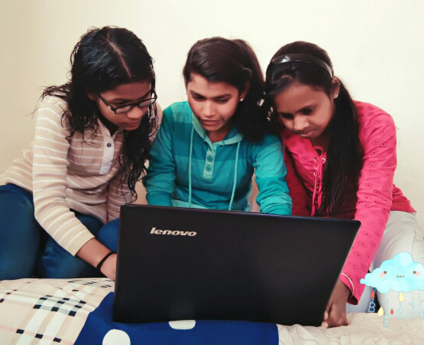

ABHISHEK GUPTA
IITD ‘13 CS Graduate. Co-founded Zumbl.com and FranklyMe. Zumbl was acquired and FranklyMe raised more than 2.6M$ from Matrix Partners and others. Was working with Education Department, Delhi Government before NavGurukul.

RISHABH VERMA
A self learnt programmer, working on Education & Technology. Aged 21, he was part of the founding team of Airwoot. He then took a break to spend a year travelling in the mountains. Later, Rishabh headed Technology for Grownout.

SURABHI YADAV
IIT Delhi + UC Berkeley Alumna. Worked as a public policy researcher at IIT Delhi for three years to understand inclusive innovation ecosystem in India. As a student of International Development, her work has focused on gender and rural development in India.

ALISHA SADANA
A feminist and social activist, one of the members of a 25-day people's movement/peace campaign. A student of Humanities & Social Work. Attended various training programs on gender equality, domestic violence, women rights & LGBT issues.
NITESH SHARMA
A NavGurukul alumnus, Nitesh completed BCA from Sant Singaji Institute Of Science & Management. Interested in social welfare and solving problems through facilitation and ground-work.

PRALHAD JADHAV
A Navgurkul alumnus, Pralhad completed BE from Electronics & Telecommunication engineering stream Graduate in 2017 from Pune Univercity. Now working with Navgurukul as technical suppoter

ANURADHA DASWANI
BITS Pilani Graduate 2015. Worked as an analyst and data scientist for a little above one year, before she recognised her aspiration to learn psychology and work in the domain of learning and education. She is currently pursuing her Masters in Psychology.
Theory of Change - Part I
Our students are equipped with skills to pursue aspirational jobs
like software engineering. They choose to join the mainstream
workforce or stay back in their communities and work remotely
on opportunities which are made available to them. They
become socio-economic centers in their families & communities.

Theory of Change - Part II
Our students use their skills to solve the problems that are plaguing
their communities. From making simple apps to learn english to social
network for farmers, there is a big role our alumni is playing to bring
technology to their communities. Our alumni will be an inspiration
and examples for locals to understand how learning & opportunities
are getting reinvented through Internet.